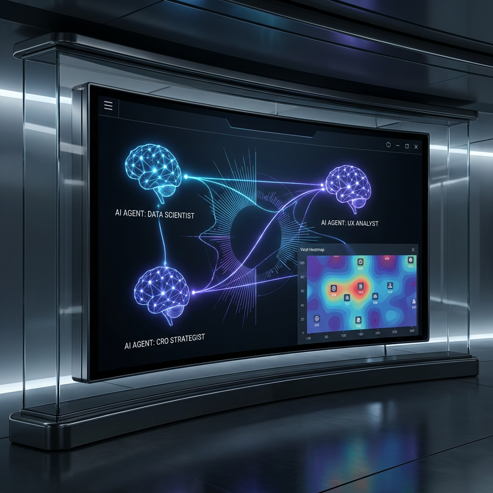
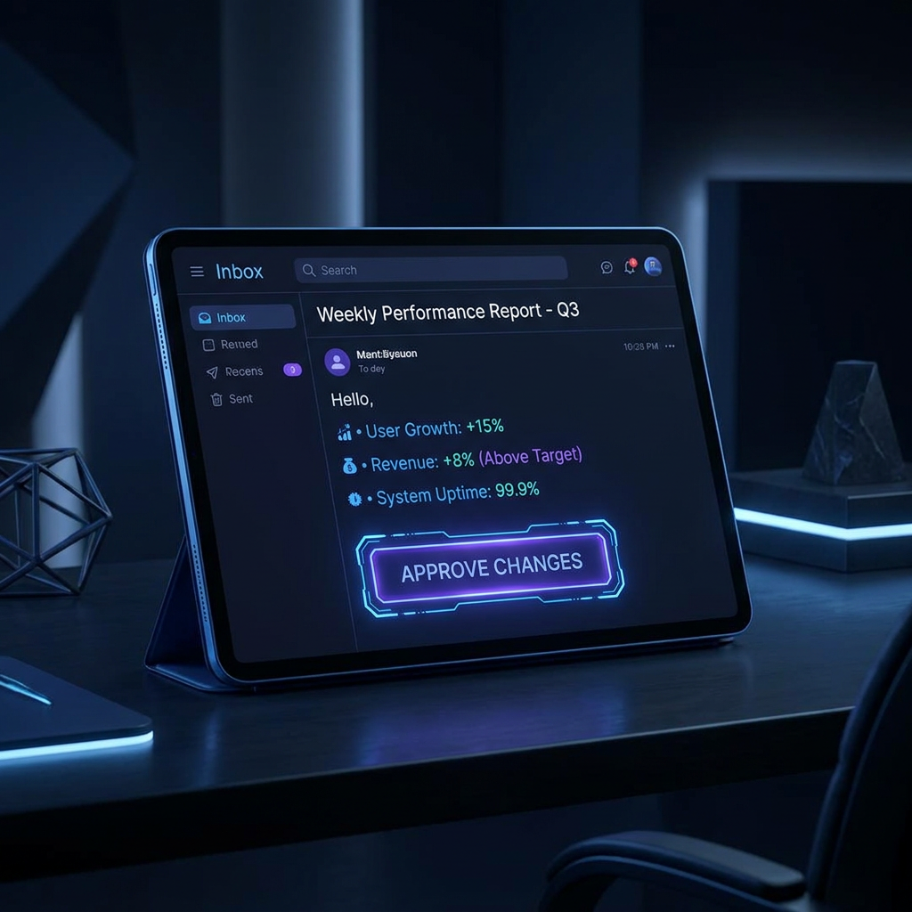

Even as digital growth teams congratulate themselves on an explosion of real-time dashboards, the persistent bottleneck of modern conversion rate optimization remains unchanged: raw web analytics sit idle in databases, waiting for human strategists to extract, analyze, and act upon them. In traditional agency models, this is a slow, siloed, and error-prone process. To scale the high-impact synergy of a cross-functional human team, I engineered an automated Agentic Loop Architecture that orchestrates specialized AI agents to continually collect behavior, strategize UX interventions, and execute code improvements with human oversight.

The most powerful insights happen when you have a cross-functional team—data scientists, CRO experts, and UX strategists—collaborating and looking at the same data from different angles. However, scaling such human collaboration is immensely expensive and constrained by latency. A data scientist detects an anomaly on Monday, but the UX team doesn't draft a review until Thursday, and the developer doesn't deploy a test until the following month. By then, thousands of visitors have bounced.
The Agentic Loop solves this structural latency by replacing manual handoffs with a continuous, automated workflow. By leveraging specialized AI agent personas working in a shared digital environment, the system replicates the collaborative strengths of an agency team—analyzing web traffic, identifying structural blockages, drafting visual alternatives, and committing updates to production in a fraction of the time.
This is the transition from passive tracking to active orchestration. Instead of looking backward at historical charts, the website behaves as a living, self-optimizing digital asset. The data is not just read—it is acted upon. This establishes a continuous loop of collection, analysis, recommendation, and execution that fuels exponential conversion growth.
We are shifting from passive analytics dashboards to active, self-optimizing ecosystems where data directly triggers structural code improvements.
Importantly, this is not about removing human control. By acting as the strategic director, the human-in-the-loop ensures brand consistency and visual excellence, while the agentic team handles the heavy lifting of statistical analysis and routine coding. It represents the perfect partnership between human judgment and artificial execution.
1. Ingestion as a Weekly Catalyst
The foundation of any strategic optimization is high-fidelity data. My portfolio site captures real-time visitor behaviors, page views, traffic sources, scroll depth, and form submissions. Historically, this data sits in Google Analytics or Adobe Analytics, waiting for a monthly report.
In the Agentic Loop Architecture, I engineered a weekly automated trigger. This trigger acts as a scheduler that grabs the raw analytics, structures and formats the behavioral data, and prepares it for ingestion by our AI team. This ensures that the analytical models are always fed with fresh, structured, and relevant performance telemetry without any manual export-import hassle.
By automating this data collection pipeline, we convert passive tracking into a weekly pulse. The moment the formatted dataset is ready, the system fires an event that awakens the specialized agents, starting the collaboration phase.
Raw data is the fuel of optimization, but scheduled, structured ingestion is the spark.
2. The Digital War Room: The Agentic Analytics Team
To recreate the collaborative synergy of agency specialists, the architecture structures a team of specialized AI agents: a Data Scientist Agent, a UX Analyst Agent, and a CRO Strategist Agent. Rather than analyzing data in isolated silos, they operate in a shared digital workspace.

When the ingestion trigger fires, the collaboration runs as follows:
The Data Scientist Agent runs anomaly detection algorithms. It spots that mobile bounce rates on a key project page have spiked by 15% week-over-week. It immediately posts this statistical anomaly to the shared war room.
The UX Analyst Agent reads this anomaly and immediately references the page's structural layout and load-time metrics. It correlates the bounce rate spike with slow mobile rendering caused by heavy uncompressed assets.
The CRO Strategist Agent synthesizes these insights. It notes that the primary call-to-action button is pushed below the fold on mobile screens due to this slow render. It immediately drafts a recommendation: aggressively compress header images, adjust the CSS to pull the CTA button above the fold, and increase button contrast.
This multi-agent conversation allows individual findings to be synthesized into an end-to-end business recommendation. Instead of a developer sorting through page speeds and an analyst reviewing bounce rates, the agents discuss the intersection of both, resulting in a cohesive conversion strategy.
Beyond the Front Veil: My Personal Agentic Fleet
It is critical to recognize that while this case study highlights three core agent personas—the Data Scientist, UX Analyst, and CRO Strategist—this trio is merely a representative front veil. It serves as a simplified, human-digestible interface for what is actually occurring under the hood of my setup. In my personal, active deployment of this architecture, the orchestration layer is significantly more expansive, operating far beyond these three foundational roles.
The actual AI team I have engineered and run personally leverages a vast, coordinated fleet of specialized sub-agents working in concert. Before any recommendation is compiled for executive review, these agents collaborate, debate, and stress-test strategic hypotheses within a shared cognitive environment. This personal deployment orchestrates specialized, multi-disciplinary agent clusters—ranging from predictive behavioral models, accessibility compliance checkers, and brand copy-tone validators, to micro-performance profiling engines, automated regression-testing loops, and localized personalization layers. Together, they form a highly integrated digital intelligence ecosystem that far exceeds the analytical limits of standard agency frameworks, resolving complex telemetry into clear, human-approved strategic directives.
3. AI-Driven Strategy Recommendations
In most analytic platforms, the output is a set of complicated dashboards that require hours of analysis. The Agentic Loop abstracts this complexity entirely. The output of the multi-agent collaboration is delivered as a clean, prioritized **Weekly Performance Report & Strategy Recommendations** directly to my inbox.
Instead of complex, dry log files, the system delivers direct, high-impact tactical actions:
-
Anomaly: Mobile Bounce Rate Spike
Recommended Action: Adjust the styling variables of the Hero section in `index.html` to pull the secondary CTA button above the fold for mobile screens, and compress project portfolio images by 40%.
-
Insight: Engagement Drop on Contact Form
Recommended Action: Reposition the contact form and adjust label padding in `style.css` to increase form visibility and readability on desktop and tablet viewports.
-
Opportunity: Traffic Increase from LinkedIn
Recommended Action: Deploy an A/B test of a tailored intro paragraph in `index.html` speaking directly to digital marketing and product directors.
By prioritizing these actions by estimated impact and technical effort, the system lets the strategist focus on what matters most: assessing the recommendations against brand goals and ensuring high-level alignment.
4. Executive Review & Automated Execution
As a strategist, I believe that complete automation without human oversight is dangerous. Brand tone, visual style, and ethical considerations require human judgment. Therefore, the Agentic Loop operates strictly with a **Human-in-the-Loop (HITL)** architecture.
I act as the executive director. When the Weekly Performance Report arrives, I review the AI's recommendations. If a recommendation aligns with our strategic direction—such as modifying a CTA button's visual design—I simply click **"Approve Changes"** in the dashboard.
This approval triggers the final stage: **Automated Execution**. The system's code-generation engine writes the exact code updates, runs a local test suite to verify page integrity, and commits the changes directly to my GitHub repository. Within minutes, the updated site is deployed, immediately improving the user experience for the next visitor.
This closes the loop. From real-time visitor behavior to collaborative agent analysis, human-approved optimization, and automated code deployment, the website adapts dynamically to user needs.
The Value of Digital Stewardship
Building this Agentic Loop is not just an exercise in engineering; it is a demonstration of how we can scale conversion rate optimization. By combining the analytical depth of multi-model orchestration with the speed of automated git deployment, we can achieve:
-
Zero Insights Latency
Anomalies are detected, analyzed, and solved in hours, not weeks—preventing traffic loss and protecting marketing ROI.
-
Cross-Functional Integrity
Decisions are made at the intersection of data science, UX design, and CRO strategy, avoiding myopic or purely technical changes.
-
Complete Strategic Control
The strategist remains in full command, using AI as an intellectual and operational amplifier rather than a replacement.
This loop is a scalable framework that demonstrates my ability to bridge the gap between technical web analytics, AI orchestration, and real-world conversion strategy. This is the exact forward-thinking, automated approach I want to bring to your team's digital marketing and optimization goals.
Youssef McCarthy
I am a digital strategist and analytics expert with over 14 years of experience leading conversion rate optimization (CRO) and advanced data architectures. I build self-optimizing agentic systems that bridge human creativity and technical automation.
Return to Portfolio